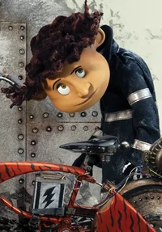

Wyborn Lovat

Wybie está constantemente nervioso
(evidente en la forma en que siempre está jugando con su mano).
Sin embargo, es un aventurero parecido, pero no idéntico, a
Coraline. Tiene un extraño gusto por las cosas extrañas,
que se muestra cuando el Gato le trae "pequeñas cosas muertas"
y cuando se burla de una babosa mientras le toma una foto.
Es bastante impulsivo en términos de habla, ya que solo reacciona
a lo que dice después de que lo dice. Esto se muestra cuando
ridiculiza el nombre de Coraline y luego se arrepiente.
Por sus acciones hacia el Gato, es bastante compasivo, presumiblemente
solo con los animales o con aquellos que le gustan.
A veces se le ve usando dos máscaras de soldador modificadas.
Uno para andar en bicicleta, que está equipado con tres visores
de aumento, que maneja con manivelas para acercarse mejor a los
objetos de su enfoque. Mientras que el otro está equipado con un
periscopio, que usa para encontrar babosas banana.